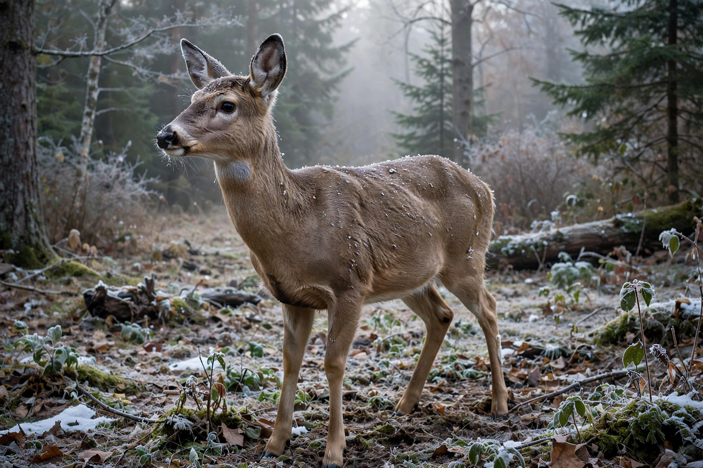

Fight-or-flight response
From Wikipedia, the free encyclopedia

The fight-or-flight response (also fight-flight-or-freeze, or hyperarousal) is a physiological reaction that occurs in response to a perceived harmful event, attack or threat to survival. First described by Walter Bradford Cannon in 1915, it is the sympathetic nervous system's alarm: adrenaline and noradrenaline surge, heart rate and blood pressure rise, blood diverts to muscles, pupils dilate, digestion pauses — the body prepared to fight or flee. Hans Selye's stress research and the modern HPA-axis model extended Cannon's picture.
Mechanism
The amygdala flags threat and the hypothalamus fires two systems: the fast sympatho-adrenal path (seconds) and the slower Cortisol-driven HPA axis (minutes). Freezing — tonic immobility — precedes or replaces flight in many animals and humans, and a 'tend-and-befriend' pattern (Taylor, 2000) was proposed as a female-typical complement. Chronic activation (allostatic load) links the response to hypertension, immunosuppression and anxiety disorders; PTSD is its pathological persistence.
History
Cannon's Bodily Changes in Pain, Hunger, Fear and Rage (1915) coined the phrase and the homeostasis concept it defends. The response is evolutionarily conserved across vertebrates; its modern misfires — panic attacks, stage fright, road rage — are the cost of a stone-age alarm in a world of symbolic threats.